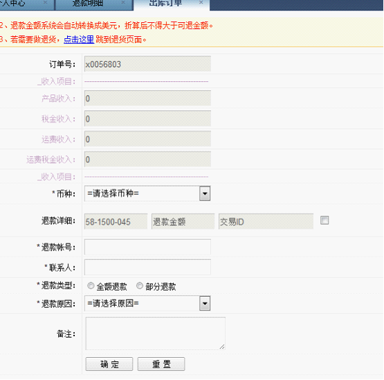
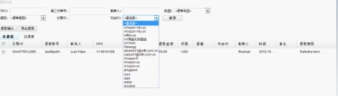

在订单管理->出库订单中的“已出库”状态找到要做退款的那笔订单，然后点击RMA，可以制作RMA，界面如下，将要退款的订单的信息填入其中，然后点击确认，即保存在退款明细中。

进入RMA管理下的退款明细，便可查询这笔退款，可以通过页面的搜索框，查询订单，一般刚做完退款的会显示在最上面，分开未付款、已付款两个状态，已实际退款的需要回系统操作退款确认。未做退款确认的退款单，还可以删除重新做过，点击未退款状态的退款单后面的删除图标进行操作，另外可以将页面数据导出表格，点击导出数据即可。
